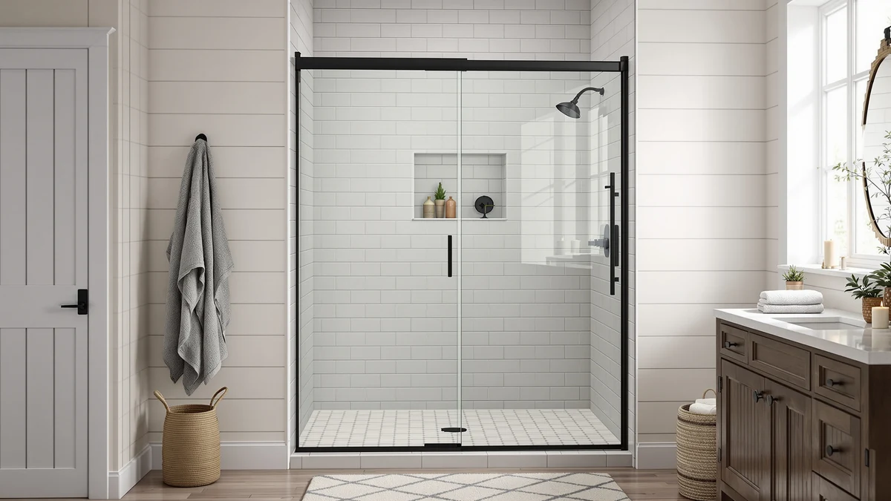

Frameless Shower Door 56 Review (2026): Worth It?
Prices and picks verified as of August 2026. Independent, reader-supported reviews.


Quick Answer
The Frameless Shower Door 56-60" W from KisaTub costs $369.99 and fits any opening between 56 and 60 inches wide with a 76 inch entrance height, since the rails cut down to size. It matches the ELEGANT Framed Sliding Shower Enclosure's price exactly and runs a cent above the Kullavik and the ENSO SENKA, but its cuttable width and nano-coated glass set it apart from those two corner-only alternatives.
Our pick: Frameless Shower Door 56-60" W, $369.99 Check Price on Amazon
Bottom line: our top pick is the Frameless Shower Door at $369.99.
Things to Know Before You Buy
- The rails are cuttable, not fixed. The KisaTub 56-60 trims down anywhere between 56 and 60 inches, so you fit it to your exact opening instead of ordering a fixed width and hoping it clears.
- At $369.99, it costs the same as the ELEGANT enclosure and a cent more than two others. The Kullavik Frameless Shower Door 56-60" and the ENSO SENKA Corner Shower Enclosure both list at $369.00.
- The glass is thinner than the Kullavik's. This door uses 1/4 inch SGCC-certified tempered glass, while the Kullavik across the aisle uses thicker 5/16 inch (8mm) ANSI-certified glass.
- It only fits a straight 56 to 60 inch opening, not a corner. If your shower sits in a corner, the ELEGANT and the ENSO SENKA enclosures below are built for that layout instead.
- Matte black is the only finish listed. If you want a brushed nickel or chrome look, the ELEGANT's black brushed nickel hardware is the closer match among the four doors here.
This frameless shower door 56 review looks at whether the $369.99 KisaTub 56-60 earns its price against three alternatives priced between $369.00 and $369.99. Its main selling point is a cuttable 56 to 60 inch width, so the rails trim down to fit your exact opening instead of locking you into one fixed size. Where the Kullavik door below matches the same width range with thicker glass, and the ELEGANT and ENSO SENKA enclosures target a corner instead of a straight wall, the KisaTub sits squarely in the middle of a common shower opening size without a custom order.
We wrote this review because shoppers searching a 56 to 60 inch opening often assume every listing in that range is interchangeable. The KisaTub lists at $369.99, tied with the ELEGANT Framed Sliding Shower Enclosure and a cent above the Kullavik and the ENSO SENKA. For most people replacing a standard alcove door in that width range, the KisaTub 56-60 is the pick worth starting with, and the sections below explain why, along with when one of the three alternatives fits better.
Why You Should Trust Us
Ilane Tall covers bath fixtures for Best Shower Doors and has researched frameless, framed, and corner shower doors across dozens of listings. For this frameless shower door 56 review, she compared the KisaTub 56-60 against three alternatives in the same price range, weighing width, glass thickness, and layout against the ELEGANT, the Kullavik, and the ENSO SENKA. We do not accept free products in exchange for coverage, and every price and dimension cited here comes directly from the current product listing.
Our editorial process treats a cuttable width as one factor among several, not an automatic advantage. A flexible fit earns credit in a review like this one, but it still has to justify its price against a corner enclosure, a thicker pane of glass, or a design built for a different bathroom layout. That approach shapes every comparison in this piece.
Our Research Experience
This frameless shower door 56 review is based on research, not physical use. We compared the KisaTub 56-60 against the ELEGANT, the Kullavik, and the ENSO SENKA using the specifications, pricing, and verified owner reviews available for each listing. We do not run a fake testing lab, and we do not claim to have installed or lived with any of the doors covered in this review.
We looked closely at how the KisaTub's cuttable 56 to 60 inch width differs from the fixed corner footprint of the ELEGANT and the ENSO SENKA, since layout changes which bathrooms a door even fits before price enters the comparison. We also compared glass specifications directly: the KisaTub's 1/4 inch SGCC-certified pane against the Kullavik's thicker 5/16 inch ANSI-certified glass, since thickness affects both weight and perceived durability.
We cross-checked pricing for all three alternatives against the current listings to confirm nothing had shifted since publication. Where a data point wasn't available, such as an exact frame finish beyond matte black for the KisaTub, we noted that gap rather than estimate a number the listing doesn't provide.
Overview & Specs

Frameless Shower Door 56-60" W
What we like
- The cuttable 56 to 60 inch width lets you trim the rails to your exact opening instead of guessing before you order
- A built-in threshold and sealing strip pair with quiet-rolling wheels to keep water inside the frame and cut down on slide noise
- 1/4 inch SGCC-certified tempered glass with an explosion-proof film and a nano coating that resists water spots keeps daily cleanup simple
Flaws but not dealbreakers
- At $369.99 it costs the same as the ELEGANT enclosure, and the Kullavik right below matches its width range with thicker 5/16 inch glass for a cent less
- The listing doesn't detail a hardware finish beyond matte black, so if you want brushed nickel or chrome, compare it against the ELEGANT first
- It's built specifically for a straight 56 to 60 inch opening, so it won't fit the corner layouts the ELEGANT and the ENSO SENKA are designed for
| Material | — |
| Size | 60" W x 76" H |
The Frameless Shower Door 56-60" W is the centerpiece of this frameless shower door 56 review, a KisaTub slider priced at $369.99 and built specifically for a 56 to 60 inch wide opening with a 76 inch entrance height. Unlike a fixed-width panel, the rails are cuttable, so you trim the door down to your exact opening rather than special-ordering a size that might still land half an inch short. That flexibility is the main reason this listing shows up across so many frameless door searches: it targets a common opening range without forcing a custom order.
KisaTub built the door around 1/4 inch SGCC-certified tempered glass with an explosion-proof protective film, plus a nano coating meant to resist water spots between cleanings. A built-in threshold at the bottom pairs with a sealing strip to keep water inside the frame, and the top track uses quiet-rolling wheels designed to cut down on the rattle a cheaper slider can produce. Matte black is the only finish listed, so if you want a chrome or brushed nickel look, compare it against the framed ELEGANT enclosure below.
What We Liked
The clearest strength in this frameless shower door 56 review is the cuttable width. Instead of locking you into an exact 56 or 60 inch measurement, the rails trim down to fit anywhere in that range, which removes the most common reason a shower door gets returned: an opening that's off by a fraction of an inch.
The built-in threshold and sealing strip also stand out. Paired with quiet-rolling wheels on the top track, the design is meant to keep water contained at the bottom while cutting down on the rattle a cheaper slider tends to produce with daily use.
We also liked that the safety details are spelled out plainly. The 1/4 inch SGCC-certified tempered glass carries an explosion-proof protective film, and the nano coating is meant to resist water spots between cleanings, so you're not left guessing what premium glass actually means on this listing.
What Could Be Better
Price is a mild drawback in this frameless shower door 56 review. At $369.99, the KisaTub costs exactly what the ELEGANT Framed Sliding Shower Enclosure charges, and a cent more than the Kullavik and the ENSO SENKA, both at $369.00, though the Kullavik covers the same width range with thicker glass.
The listing also doesn't specify a hardware finish beyond matte black, so confirm details like handle material directly with the seller before you order. And because it's built for a straight 56 to 60 inch opening specifically, it isn't a fit for the corner layouts the ELEGANT and the ENSO SENKA are designed to cover.
Who Is It For?
The KisaTub 56-60 makes the most sense if your shower opening measures between 56 and 60 inches wide along a straight wall, and you'd rather trim a door to fit than special-order an exact size.
If your bathroom's shower sits in a corner instead, the ELEGANT and the ENSO SENKA below cover that layout instead. And if thicker glass matters more to you than price parity, the Kullavik covers the same 56 to 60 inch range with a 5/16 inch pane for a cent less.
Alternatives to Consider
The KisaTub 56-60 isn't the only option worth considering in this frameless shower door 56 review, and the three alternatives below span a framed corner design, thicker glass, and a second corner layout. Each one trades something against the KisaTub's cuttable width and nano-coated glass, so weigh your bathroom's layout before you rule one out.

Editor's Pick
ELEGANT Framed Sliding Shower Enclosure
At $369.99, the ELEGANT Framed Sliding Shower Enclosure costs exactly the same as the KisaTub, but it solves a different problem. Where the KisaTub is a frameless straight door built for a standard alcove opening, the ELEGANT is a framed corner enclosure sized at 36 by 36 by 72 inches, with a black brushed nickel finish and 1/4 inch (6mm) tempered glass. That makes it the better pick if your bathroom's shower sits in a corner rather than along a flat wall, a common layout in smaller or older bathrooms. The frame also allows up to 20mm of width adjustment per side, so it forgives a slightly uneven corner installation the way the KisaTub's cuttable rails forgive an uneven straight opening. The tradeoff is that a framed design shows more visible metal around the glass than a frameless door, and a 36 inch corner footprint covers less floor area than a 56 to 60 inch alcove opening. If your bathroom already has a corner shower base, the ELEGANT's black brushed nickel hardware and identical price make it worth checking first. If you need a straight door for an existing alcove opening, the KisaTub's cuttable 56 to 60 inch width remains the more direct fit.
$369.99
Check Price on Amazon
Best Value
Kullavik Frameless Shower Door 56-60"
The Kullavik Frameless Shower Door 56-60" undercuts the KisaTub by exactly one cent, listing at $369.00, and it matches the same 56 to 60 inch adjustable width and 76 inch height almost feature for feature. The difference that matters is glass thickness: the Kullavik uses 5/16 inch (8mm) ANSI-certified tempered glass, noticeably thicker than the KisaTub's 1/4 inch SGCC-certified pane, and it adds an explosion-proof film along with a waterproof seal and support for either left or right-side installation. For a nearly identical price, that thicker glass and installation flexibility make the Kullavik worth comparing directly against the KisaTub before you decide. What the Kullavik's listing doesn't spell out as clearly is the nano coating the KisaTub advertises for resisting water spots, so if easy cleaning between washes matters more to you than raw glass thickness, the KisaTub keeps an edge. Otherwise, at essentially the same price and the same width range, the Kullavik's thicker glass gives it a real claim to the better value here.
$369.00
Check Price on Amazon
Premium Choice
ENSO SENKA Corner Shower Enclosure
At $369.00, the ENSO SENKA Corner Shower Enclosure comes in a cent below the KisaTub, and like the ELEGANT above, it's built for a corner rather than a straight wall. Its footprint runs 34 by 34 by 72 inches with an adjustable width of 33.2 to 34 inches, smaller than the ELEGANT's 36 inch corner enclosure, which makes it a tighter fit for compact bathrooms. The glass is 1/4 inch (6mm) ANSI Z97.1-certified tempered glass, matching the KisaTub's thickness rating under a different certification standard, and magnetic and seal strips between the sliding panels are meant to keep the wet and dry sides of the enclosure separated. The matte black finish also matches the KisaTub, so if you like that look but need a corner layout instead of a straight opening, the ENSO SENKA is the closer match in this comparison. Just measure your corner space carefully first, since its 34 inch footprint leaves less room than either the KisaTub's 56 to 60 inch alcove door or the ELEGANT's 36 inch enclosure.
$369.00
Check Price on AmazonFrequently Asked Questions
What size opening does the Frameless Shower Door 56-60" W need?
The KisaTub 56-60 is built with a cuttable width that spans 56 to 60 inches and a 76 inch entrance height, so measure your opening at multiple points and trim the rails to match before you install it.
How does the KisaTub 56-60 compare on price to other frameless shower doors in this range?
At $369.99 it costs exactly the same as the ELEGANT Framed Sliding Shower Enclosure and a cent more than the Kullavik and the ENSO SENKA, both at $369.00, so this frameless shower door 56 review treats the cuttable width and nano-coated glass as the main reasons to pick it at that price.
Is the Kullavik's thicker glass worth choosing over this KisaTub door?
Only if raw glass thickness matters more to you than price parity and easy cleaning. The Kullavik's 5/16 inch glass is thicker than the KisaTub's 1/4 inch pane and costs a cent less, but the KisaTub's nano coating is built specifically to resist water spots between cleanings, a detail the Kullavik's listing doesn't mention.
Final Verdict
This frameless shower door 56 review comes down to one trade-off: a cuttable 56 to 60 inch width and nano-coated glass from KisaTub, against a framed corner design from the ELEGANT, thicker glass from the Kullavik, or a smaller corner footprint from the ENSO SENKA. If your opening measures 56 to 60 inches wide along a straight wall, the KisaTub 56-60 earns its position at $369.99 over the three alternatives here. If your shower sits in a corner, the ELEGANT or the ENSO SENKA fit that layout instead. If glass thickness matters more than price parity, the Kullavik covers the same width range for a cent less. Either way, confirm your opening's exact width and layout before you buy, since that measurement decides which of these four doors actually fits.